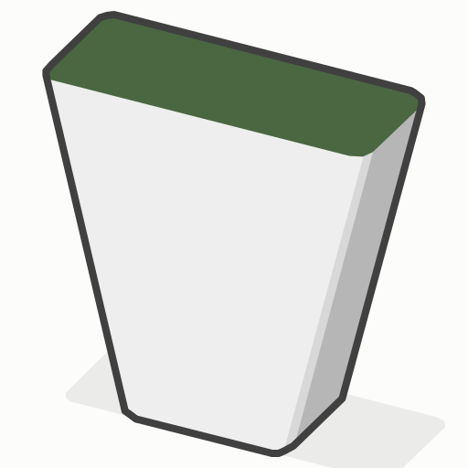
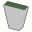
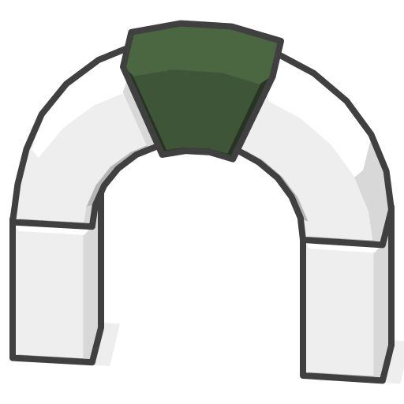
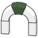
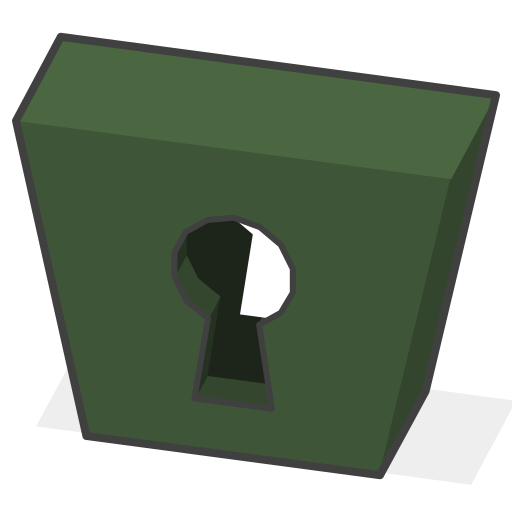

keystone mark directions
Prototypes in prototypes/mark. Every image is 1:1 on paper. Cairn first, for comparison.
cairn (reference)
Stacked stones, moss cap, flat small form. This is cairn's favicon.svg at each size; the faceted glyph lives in its kit.


docs
voussoir
One wedge stone built as a cairn stone, yawed so its right end undercuts; moss on the top face only.


keystone
arch
Five-stone semicircular arch on two piers; only the keystone, standing proud of the ring, wears moss.




keyed
One moss keystone wedge on its narrow bed with a keyhole bored through its face.

keystone